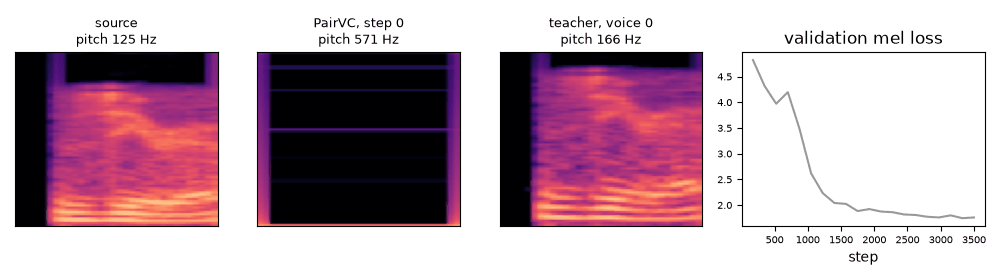
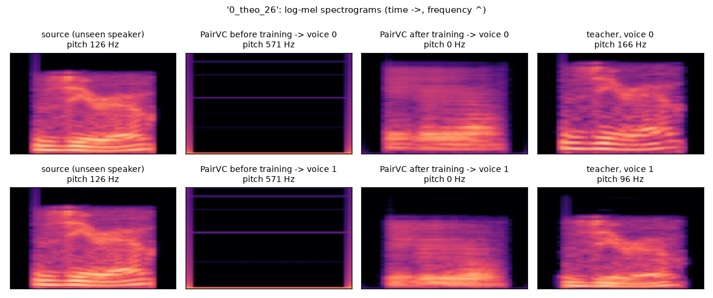
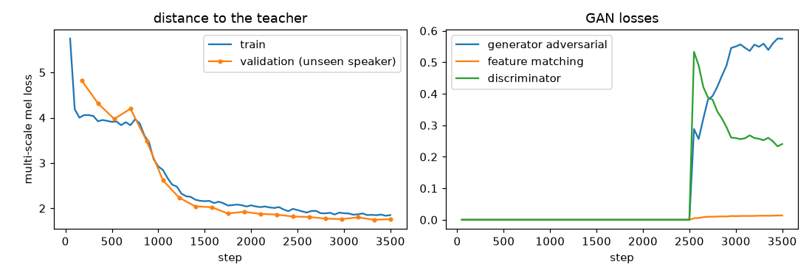

Convert a clip
Convert a demo clip, a recording or a file, chunk by chunk, exactly as a live stream would.
tiny-pairvc
A small, fully causal neural network that turns speech into a target voice while you speak. It learns from paired data: the same speech already converted by a big, slow "teacher" model, which it learns to reproduce at a fraction of the cost.
The trained demo model (3 MB ONNX file) runs here, on your device, with onnxruntime-web: no server, nothing is uploaded. Like StreamVC, audio goes through the model in 20 ms chunks, and the model keeps a memory of the past between chunks.
Convert a demo clip, a recording or a file, chunk by chunk, exactly as a live stream would.
Your microphone → PairVC → your headphones, in real time. Use headphones, or the speakers will feed back into the microphone. Works in Chrome, Edge and Safari.
Every bar must stay under the dashed line (20 ms) to keep up with a microphone. Spectrograms: 0–8 kHz, time →.
Three recordings of a speaker the model never heard in training, converted to two target voices. "Before training" is the same network with random weights. The "teacher" column is the target the model is trying to reproduce: here, a pitch shift of +5 or −5 semitones.
80 held-out pairs from an unseen speaker, compared with the teacher's output. The demo model was trained for 3500 steps (~1.5 h on a CPU: 2500 steps with the spectral loss only, then 1000 GAN steps) on the Free Spoken Digit Dataset.
Timing, silences and each voice's timbre: MCD falls from 6.5 to 2.7 dB, so the output is closer to the teacher than the original recording is.
Clean harmonics at the new pitch: the output is breathy, and the pitch error stays near "no conversion". The next step is the full 9.6M model trained on a GPU.

The validation clip at every evaluation: source, PairVC at that step, teacher, and the validation loss.


Code, training (CPU, GPU, multi-GPU, Kaggle notebook), metrics and a Streamlit app are on GitHub.